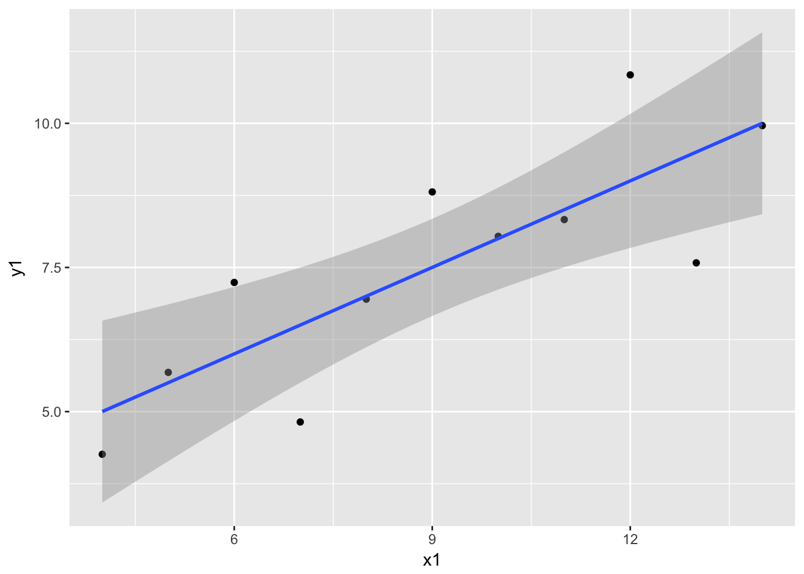
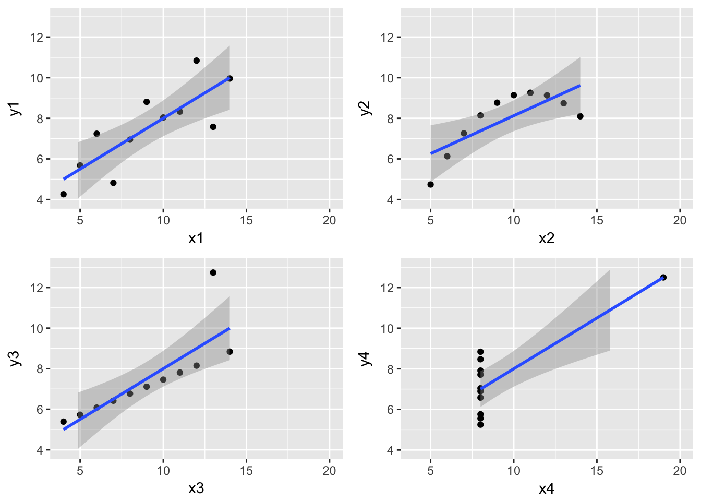

What is EDA?
Approach
Exploratory Data Analysis (EDA) is an approach/philosophy for data analysis that employs a variety of techniques (mostly graphical) to
- maximize insight into a data set;
- uncover underlying structure;
- extract important variables;
- detect outliers and anomalies;
- test underlying assumptions;
- develop parsimonious models; and
- determine optimal factor settings.
Focus The EDA approach is precisely that–an approach–not a set of techniques, but an attitude/philosophy about how a data analysis should be carried out.
Philosophy
EDA is not identical to statistical graphics although the two terms are used almost interchangeably. Statistical graphics is a collection of techniques–all graphically based and all focusing on one data characterization aspect. EDA encompasses a larger venue; EDA is an approach to data analysis that postpones the usual assumptions about what kind of model the data follow with the more direct approach of allowing the data itself to reveal its underlying structure and model. EDA is not a mere collection of techniques; EDA is a philosophy as to how we dissect a data set; what we look for; how we look; and how we interpret. It is true that EDA heavily uses the collection of techniques that we call “statistical graphics”, but it is not identical to statistical graphics per se.
History
The seminal work in EDA is Exploratory Data Analysis, Tukey, (1977). Over the years it has benefitted from other noteworthy publications such as Data Analysis and Regression, Mosteller and Tukey (1977), Interactive Data Analysis, Hoaglin (1977), The ABC’s of EDA, Velleman and Hoaglin (1981) and has gained a large following as “the” way to analyze a data set.
Techniques
Most EDA techniques are graphical in nature with a few quantitative techniques. The reason for the heavy reliance on graphics is that by its very nature the main role of EDA is to open-mindedly explore, and graphics gives the analysts unparalleled power to do so, enticing the data to reveal its structural secrets, and being always ready to gain some new, often unsuspected, insight into the data. In combination with the natural pattern-recognition capabilities that we all possess, graphics provides, of course, unparalleled power to carry this out. The particular graphical techniques employed in EDA are often quite simple, consisting of various techniques of:
- Plotting the raw data (such as data traces, histograms, bihistograms, probability plots, lag plots, block plots, and Youden plots.
- Plotting simple statistics such as mean plots, standard deviation plots, box plots, and main effects plots of the raw data.
- Positioning such plots so as to maximize our natural pattern-recognition abilities, such as using multiple plots per page.
EDA versus Classical and Bayesian
How Does Exploratory Data Analysis differ from Classical Data Analysis?
Data Analysis Approaches
EDA is a data analysis approach. What other data analysis approaches exist and how does EDA differ from these other approaches? Three popular data analysis approaches are:
- Classical
- Exploratory (EDA)
- Bayesian
Paradigms for Analysis Techniques
These three approaches are similar in that they all start with a general science/engineering problem and all yield science/engineering conclusions. The difference is the sequence and focus of the intermediate steps.
- For classical analysis, the sequence is Problem => Data => Model => Analysis => Conclusions
- For EDA, the sequence is Problem => Data => Analysis => Model => Conclusions
- For Bayesian, the sequence is Problem => Data => Model => Prior Distribution => Analysis => Conclusions
Method of dealing with underlying model for the data distinguishes the 3 approaches
Thus for classical analysis, the data collection is followed by the imposition of a model (normality, linearity, etc.) and the analysis, estimation, and testing that follows are focused on the parameters of that model. For EDA, the data collection is not followed by a model imposition; rather it is followed immediately by analysis with a goal of inferring what model would be appropriate. Finally, for a Bayesian analysis, the analyst attempts to incorporate scientific/engineering knowledge/expertise into the analysis by imposing a data-independent distribution on the parameters of the selected model; the analysis thus consists of formally combining both the prior distribution on the parameters and the collected data to jointly make inferences and/or test assumptions about the model parameters. In the real world, data analysts freely mix elements of all of the above three approaches (and other approaches). The above distinctions were made to emphasize the major differences among the three approaches.
Further discussion of the distinction between the classical and EDA approaches
Focusing on EDA versus classical, these two approaches differ as follows:
| Models |
The classical approach imposes models (both deterministic and probabilistic) on the data. Deterministic models include, for example, regression models and analysis of variance (ANOVA) models. The most common probabilistic model assumes that the errors about the deterministic model are normally distributed–this assumption affects the validity of the ANOVA F tests. |
The Exploratory Data Analysis approach does not impose deterministic or probabilistic models on the data. On the contrary, the EDA approach allows the data to suggest admissible models that best fit the data. |
| Focus |
The two approaches differ substantially in focus. For classical analysis, the focus is on the model–estimating parameters of the model and generating predicted values from the model. |
For exploratory data analysis, the focus is on the data–its structure, outliers, and models suggested by the data. |
| Techniques |
Classical techniques are generally quantitative in nature. They include ANOVA, t tests, chi-squared tests, and F tests. |
Exploratory EDA techniques are generally graphical. They include scatter plots, character plots, box plots, histograms, bihistograms, probability plots, residual plots, and mean plots. |
| Rigor |
Classical techniques serve as the probabilistic foundation of science and engineering; the most important characteristic of classical techniques is that they are rigorous, formal, and “objective”. |
EDA techniques do not share in that rigor or formality. EDA techniques make up for that lack of rigor by being very suggestive, indicative, and insightful about what the appropriate model should be.
EDA techniques are subjective and depend on interpretation which may differ from analyst to analyst, although experienced analysts commonly arrive at identical conclusions. |
| Data Treatment |
Classical estimation techniques have the characteristic of taking all of the data and mapping the data into a few numbers (“estimates”). This is both a virtue and a vice. The virtue is that these few numbers focus on important characteristics (location, variation, etc.) of the population. The vice is that concentrating on these few characteristics can filter out other characteristics (skewness, tail length, autocorrelation, etc.) of the same population. In this sense there is a loss of information due to this “filtering” process. |
The EDA approach, on the other hand, often makes use of (and shows) all of the available data. In this sense there is no corresponding loss of information. |
| Assumptions |
The “good news” of the classical approach is that tests based on classical techniques are usually very sensitive–that is, if a true shift in location, say, has occurred, such tests frequently have the power to detect such a shift and to conclude that such a shift is “statistically significant”. The “bad news” is that classical tests depend on underlying assumptions (e.g., normality), and hence the validity of the test conclusions becomes dependent on the validity of the underlying assumptions. Worse yet, the exact underlying assumptions may be unknown to the analyst, or if known, untested. Thus the validity of the scientific conclusions becomes intrinsically linked to the validity of the underlying assumptions. In practice, if such assumptions are unknown or untested, the validity of the scientific conclusions becomes suspect. |
Many EDA techniques make little or no assumptions–they present and show the data–all of the data–as is, with fewer encumbering assumptions. |
EDA vs. Summary
How Does Exploratory Data Analysis Differ from Summary Analysis?
Summary
A summary analysis is simply a numeric reduction of a historical data set. It is quite passive. Its focus is in the past. Quite commonly, its purpose is to simply arrive at a few key statistics (for example, mean and standard deviation) which may then either replace the data set or be added to the data set in the form of a summary table.
Exploratory
In contrast, EDA has as its broadest goal the desire to gain insight into the engineering/scientific process behind the data. Whereas summary statistics are passive and historical, EDA is active and futuristic. In an attempt to “understand” the process and improve it in the future, EDA uses the data as a “window” to peer into the heart of the process that generated the data. There is an archival role in the research and manufacturing world for summary statistics, but there is an enormously larger role for the EDA approach.
An EDA/Graphics Example
Anscombe Example
A simple, classic (Anscombe) example of the central role that graphics play in terms of providing insight into a data set starts with the following data set: Data
X Y 10.00 8.04 8.00 6.95 13.00 7.58 9.00 8.81 11.00 8.33 14.00 9.96 6.00 7.24 4.00 4.26 12.00 10.84 7.00 4.82 5.00 5.68
print(anscombe[c("x1","y1")])
## x1 y1
## 1 10 8.04
## 2 8 6.95
## 3 13 7.58
## 4 9 8.81
## 5 11 8.33
## 6 14 9.96
## 7 6 7.24
## 8 4 4.26
## 9 12 10.84
## 10 7 4.82
## 11 5 5.68
Summary Statistics
If the goal of the analysis is to compute summary statistics plus determine the best linear fit for Y as a function of X, the results might be given as: > N = 11 > Mean of X = 9.0 > Mean of Y = 7.5 > Intercept = 3 > Slope = 0.5 > Residual standard deviation = 1.237 > Correlation = 0.816
print(skimr::skim(anscombe[c("x1", "y1")]))
## Skim summary statistics
## n obs: 11
## n variables: 2
##
## Variable type: numeric
## variable missing complete n mean sd p0 p25 median p75 p100
## x1 0 11 11 9 3.32 4 6.5 9 11.5 14
## y1 0 11 11 7.5 2.03 4.26 6.31 7.58 8.57 10.84
## hist
## ▇▃▃▇▃▃▃▇
## ▅▂▁▅▇▂▂▂
print(summary(lm(y1~x1, data = anscombe)))
##
## Call:
## lm(formula = y1 ~ x1, data = anscombe)
##
## Residuals:
## Min 1Q Median 3Q Max
## -1.92127 -0.45577 -0.04136 0.70941 1.83882
##
## Coefficients:
## Estimate Std. Error t value Pr(>|t|)
## (Intercept) 3.0001 1.1247 2.667 0.02573 *
## x1 0.5001 0.1179 4.241 0.00217 **
## ---
## Signif. codes: 0 '***' 0.001 '**' 0.01 '*' 0.05 '.' 0.1 ' ' 1
##
## Residual standard error: 1.237 on 9 degrees of freedom
## Multiple R-squared: 0.6665, Adjusted R-squared: 0.6295
## F-statistic: 17.99 on 1 and 9 DF, p-value: 0.00217
The above quantitative analysis, although valuable, gives us only limited insight into the data.
Scatter Plot
n contrast, the following simple scatter plot of the data
ggplot(anscombe, aes(x1, y1)) + geom_point() + geom_smooth(method = "lm")

A scatter plot of the Anscombe data suggests the following:
- The data set “behaves like” a linear curve with some scatter;
- there is no justification for a more complicated model (e.g., quadratic);
- there are no outliers;
- the vertical spread of the data appears to be of equal height irrespective of the X-value; this indicates that the data are equally-precise throughout and so a “regular” (that is, equi-weighted) fit is appropriate.
Three Additional Data Sets
This kind of characterization for the data serves as the core for getting insight/feel for the data. Such insight/feel does not come from the quantitative statistics; on the contrary, calculations of quantitative statistics such as intercept and slope should be subsequent to the characterization and will make sense only if the characterization is true. To illustrate the loss of information that results when the graphics insight step is skipped, consider the following three data sets [Anscombe data sets 2, 3, and 4]: X2 Y2 X3 Y3 X4 Y4 10.00 9.14 10.00 7.46 8.00 6.58 8.00 8.14 8.00 6.77 8.00 5.76 13.00 8.74 13.00 12.74 8.00 7.71 9.00 8.77 9.00 7.11 8.00 8.84 11.00 9.26 11.00 7.81 8.00 8.47 14.00 8.10 14.00 8.84 8.00 7.04 6.00 6.13 6.00 6.08 8.00 5.25 4.00 3.10 4.00 5.39 19.00 12.50 12.00 9.13 12.00 8.15 8.00 5.56 7.00 7.26 7.00 6.42 8.00 7.91 5.00 4.74 5.00 5.73 8.00 6.89
print(skimr::skim(anscombe[c("x2", "y2", "x3", "y3", "x4", "y4")]))
## Skim summary statistics
## n obs: 11
## n variables: 6
##
## Variable type: numeric
## variable missing complete n mean sd p0 p25 median p75 p100
## x2 0 11 11 9 3.32 4 6.5 9 11.5 14
## x3 0 11 11 9 3.32 4 6.5 9 11.5 14
## x4 0 11 11 9 3.32 8 8 8 8 19
## y2 0 11 11 7.5 2.03 3.1 6.7 8.14 8.95 9.26
## y3 0 11 11 7.5 2.03 5.39 6.25 7.11 7.98 12.74
## y4 0 11 11 7.5 2.03 5.25 6.17 7.04 8.19 12.5
## hist
## ▇▃▃▇▃▃▃▇
## ▇▃▃▇▃▃▃▇
## ▇▁▁▁▁▁▁▁
## ▂▁▂▂▁▂▃▇
## ▇▇▅▅▁▁▁▂
## ▇▇▅▅▁▁▁▂
print(summary(lm(y1~x1, data = anscombe)))
##
## Call:
## lm(formula = y1 ~ x1, data = anscombe)
##
## Residuals:
## Min 1Q Median 3Q Max
## -1.92127 -0.45577 -0.04136 0.70941 1.83882
##
## Coefficients:
## Estimate Std. Error t value Pr(>|t|)
## (Intercept) 3.0001 1.1247 2.667 0.02573 *
## x1 0.5001 0.1179 4.241 0.00217 **
## ---
## Signif. codes: 0 '***' 0.001 '**' 0.01 '*' 0.05 '.' 0.1 ' ' 1
##
## Residual standard error: 1.237 on 9 degrees of freedom
## Multiple R-squared: 0.6665, Adjusted R-squared: 0.6295
## F-statistic: 17.99 on 1 and 9 DF, p-value: 0.00217
print(summary(lm(y1~x1, data = anscombe)))
##
## Call:
## lm(formula = y1 ~ x1, data = anscombe)
##
## Residuals:
## Min 1Q Median 3Q Max
## -1.92127 -0.45577 -0.04136 0.70941 1.83882
##
## Coefficients:
## Estimate Std. Error t value Pr(>|t|)
## (Intercept) 3.0001 1.1247 2.667 0.02573 *
## x1 0.5001 0.1179 4.241 0.00217 **
## ---
## Signif. codes: 0 '***' 0.001 '**' 0.01 '*' 0.05 '.' 0.1 ' ' 1
##
## Residual standard error: 1.237 on 9 degrees of freedom
## Multiple R-squared: 0.6665, Adjusted R-squared: 0.6295
## F-statistic: 17.99 on 1 and 9 DF, p-value: 0.00217
print(summary(lm(y1~x1, data = anscombe)))
##
## Call:
## lm(formula = y1 ~ x1, data = anscombe)
##
## Residuals:
## Min 1Q Median 3Q Max
## -1.92127 -0.45577 -0.04136 0.70941 1.83882
##
## Coefficients:
## Estimate Std. Error t value Pr(>|t|)
## (Intercept) 3.0001 1.1247 2.667 0.02573 *
## x1 0.5001 0.1179 4.241 0.00217 **
## ---
## Signif. codes: 0 '***' 0.001 '**' 0.01 '*' 0.05 '.' 0.1 ' ' 1
##
## Residual standard error: 1.237 on 9 degrees of freedom
## Multiple R-squared: 0.6665, Adjusted R-squared: 0.6295
## F-statistic: 17.99 on 1 and 9 DF, p-value: 0.00217
Quantitative Statistics for Data Set 2 A quantitative analysis on data set 2 yields
- N = 11
- Mean of X = 9.0
- Mean of Y = 7.5
- Intercept = 3
- Slope = 0.5
- Residual standard deviation = 1.237
- Correlation = 0.816
which is identical to the analysis for data set 1. One might naively assume that the two data sets are “equivalent” since that is what the statistics tell us; but what do the statistics not tell us? Quantitative Statistics for Data Sets 3 and 4 Remarkably, a quantitative analysis on data sets 3 and 4 also yields
- N = 11
- Mean of X = 9.0
- Mean of Y = 7.5
- Intercept = 3
- Slope = 0.5
- Residual standard deviation = 1.236
- Correlation = 0.816 (0.817 for data set 4)
which implies that in some quantitative sense, all four of the data sets are “equivalent”. In fact, the four data sets are far from “equivalent” and a scatter plot of each data set, which would be step 1 of any EDA approach, would tell us that immediately.
Scatter Plots
4 scatter plots that exhibit different characteristcs
# add scatter plots here
library(gridExtra)
##
## Attaching package: 'gridExtra'
## The following object is masked from 'package:dplyr':
##
## combine
p1 = ggplot(anscombe, aes(x1, y1)) + geom_point() +
geom_smooth(method='lm') + xlim(4,20) + ylim(4,13)
p2 = ggplot(anscombe, aes(x2, y2)) + geom_point() +
geom_smooth(method='lm') + xlim(4,20) + ylim(4,13)
p3 = ggplot(anscombe, aes(x3, y3)) + geom_point() +
geom_smooth(method='lm') + xlim(4,20) + ylim(4,13)
p4 = ggplot(anscombe, aes(x4, y4)) + geom_point() +
geom_smooth(method='lm')+ xlim(4,20) + ylim(4,13)
gridExtra::grid.arrange(p1, p2, p3, p4, ncol = 2)
## Warning: Removed 1 rows containing non-finite values (stat_smooth).
## Warning: Removed 1 rows containing missing values (geom_point).

Interpretation of Scatter Plots Conclusions from the scatter plots are:
- data set 1 is clearly linear with some scatter.
- data set 2 is clearly quadratic.
- data set 3 clearly has an outlier.
- data set 4 is obviously the victim of a poor experimental design with a single point far removed from the bulk of the data “wagging the dog”.
Importance of Exploratory Analysis These points are exactly the substance that provide and define “insight” and “feel” for a data set. They are the goals and the fruits of an open exploratory data analysis (EDA) approach to the data. Quantitative statistics are not wrong per se, but they are incomplete. They are incomplete because they are numeric summaries which in the summarization operation do a good job of focusing on a particular aspect of the data (e.g., location, intercept, slope, degree of relatedness, etc.) by judiciously reducing the data to a few numbers. Doing so also filters the data, necessarily omitting and screening out other sometimes crucial information in the focusing operation. Quantitative statistics focus but also filter; and filtering is exactly what makes the quantitative approach incomplete at best and misleading at worst. The estimated intercepts (= 3) and slopes (= 0.5) for data sets 2, 3, and 4 are misleading because the estimation is done in the context of an assumed linear model and that linearity assumption is the fatal flaw in this analysis.
The EDA approach of deliberately postponing the model selection until further along in the analysis has many rewards, not the least of which is the ultimate convergence to a much-improved model and the formulation of valid and supportable scientific and engineering conclusions.